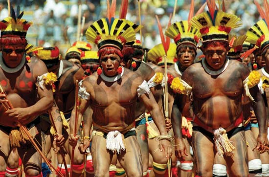

Select a Topic:
Indigenous Roots
Explore how this legendary water spirit reflects a deep respect for nature and continues to teach valuable lessons on balance and wisdom.
Indigenous Worldview: For many Indigenous peoples, all elements of nature are inhabited by spirits or entities with whom humans can interact. Iara represents one of these beings, with powers over water. She reflects the reverence of Indigenous peoples for rivers and waters as sources of life, wisdom, and danger.
Education and Morals: The legend of Iara also serves as a tool for education and the transmission of values within Indigenous communities. Stories involving the Mother of Waters are told to new generations to teach the importance of respecting nature, the dangers of disobeying the teachings of elders, and the need to maintain balance with the environment.
Adaptation and Resistance: The persistence and adaptability of the Iara myth highlights how Indigenous cultures have managed to preserve their traditions and knowledge despite intense processes of colonization and acculturation. The figure of Iara stands as a testament to cultural resistance and the richness of Brazil’s Indigenous heritage.
Symbolism
Through the lens of Iara’s legend, we gain insights into the human condition, the mystery of nature, and the complexity of social and environmental relationships.
Fatal Attraction: Many stories about Iara revolve around her irresistible allure, which leads men to abandon their responsibilities and families, following her to the depths of the rivers. These narratives explore the seduction of the unknown, the call to adventure, and the dangers of disobedience and transgression.
Life Lessons: Beyond its fairy-tale aspect, the legend of Iara serves as a vehicle for moral teachings and warnings. The consequences faced by those who are ensnared by Iara’s song highlight the importance of personal choices and the repercussions they may have.
Interactions with Other Legends: Iara is not an isolated entity but part of an interconnected system of beliefs and mythical characters. Her story intertwines with other Brazilian folklore creatures, such as the Curupira, the Boto, and the Boiúna, creating a rich tapestry of myths that reflects Brazil’s cultural and ecological diversity.
Impact on Pop Culture
Iara's appearances span literature, music, cinema, and comics, demonstrating the versatility and enduring interest in this enigmatic figure.
Literature: Iara features in poetry, short stories, and novels, serving as an inspiring muse for writers who explore her many facets.
Music: Songs and operas have been composed in honor of the Mother of Waters, reflecting the fascination her story holds for composers.
Cinema & TV: Iara has been depicted in films, soap operas, and series, ranging from faithful adaptations of the folklore to modern reinterpretations that adapt her myth to new narratives.
Translated from: "Desvendando o Mito de Iara" by Jorge Costa